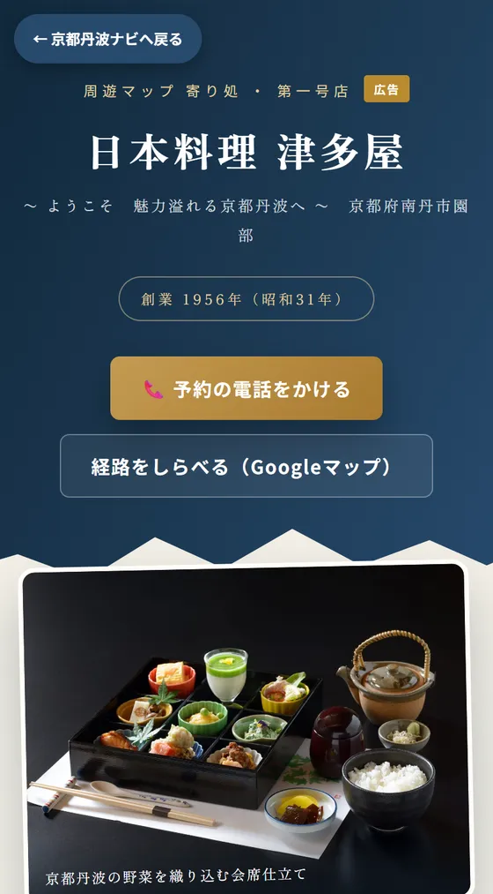
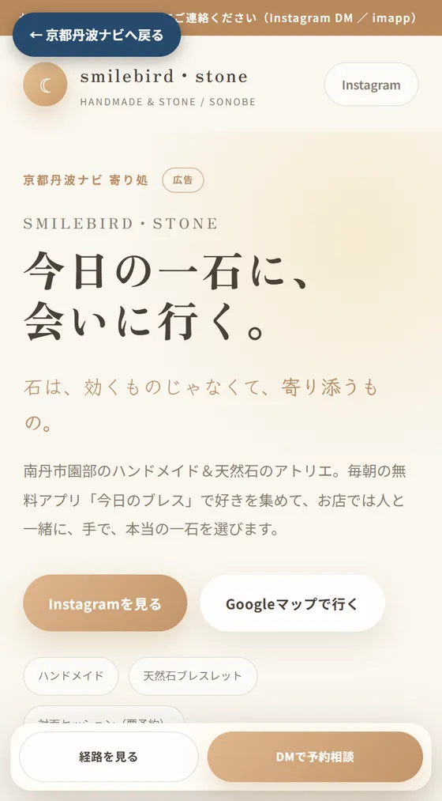
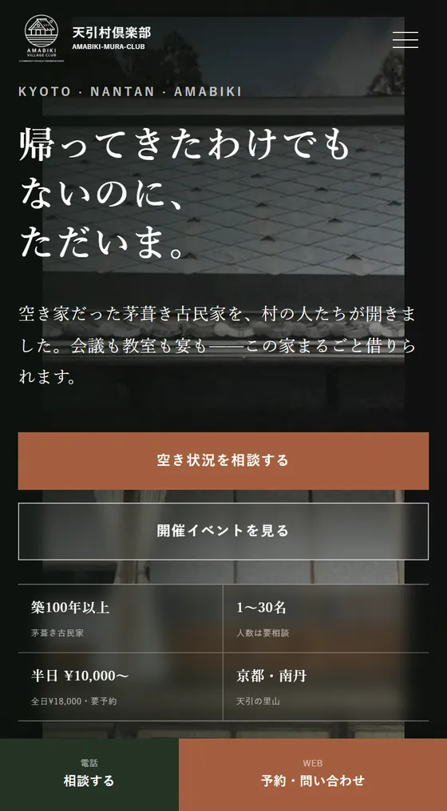

京都丹波ナビは、亀岡市・南丹市・京丹波町のイベントとお店を紹介する地域サイトです。郷土史ゲーム「京都丹波タイムトラベル」と周遊マップを入口に、地域を調べている人・訪れる人に届けます。掲載は2種類あります。
まつり・マルシェ・ワークショップ・展示・体験会など。自治会・個人・団体・企業どなたでも。掲載するとイベント専用ページができ、検索やSNSからそのページへ直接来てもらえます。
写真・お品書き・こだわり・予約導線をまとめた1ページを当方で制作。周遊マップに🍵ピンが載り、近隣イベントページからもリンクされます。お店は情報を渡すだけ。
イベント名やお店の名前で検索されたときに見つかるページを持てます。ページには日程・場所・地図・公式サイトへのリンクが入り、SNSやLINEにそのまま貼れます。
京都丹波で開かれるイベントなら、どなたでも無料で掲載できます。記入は3分ほど。内容を確認のうえ、イベント一覧と専用ページに掲載します。
イベントを掲載する（無料）記入フォームへ ｜ 個人・団体・企業どなたでも掲載中のイベントは イベント一覧 でご覧いただけます。
いま掲載中の3軒です。画像をタップすると、そのままのページをご覧いただけます。

日本料理 津多屋南丹市園部 ・ 園部城弁当のお店
smilebird・stone南丹市園部 ・ ハンドメイドと天然石
天引村倶楽部南丹市園部町天引 ・ 茅葺き古民家写真・文章はお店から伺った内容をもとに、当方で構成・執筆します。公開前に必ずご確認いただきます。
ご不明な点は kotera@teraia.net（teraia・小寺利典）までお気軽にどうぞ。